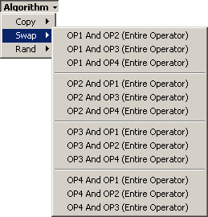
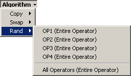
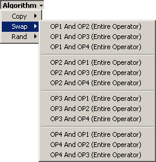
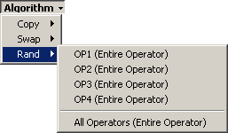

The menu buttons on some of the parameter groups have some high level commands that you can use to manipulate multiple parameters at once. The menus are basically the same for each button. They are composed of three commands:


The only difference between the buttons is the source and target parameters. I think the parameters they copy should be pretty obvious so I'm not going to list them out. Just remember that with respect to the control layout, the operators go from left to right and top to bottom. That is, operator 1 is on the left for horizontally grouped controls and on the top for the EG controls.